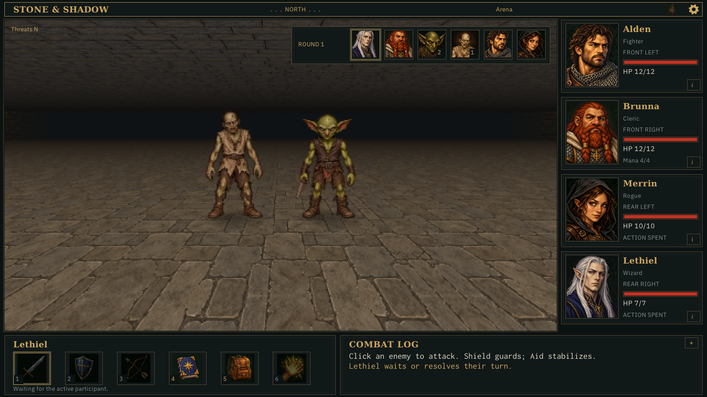
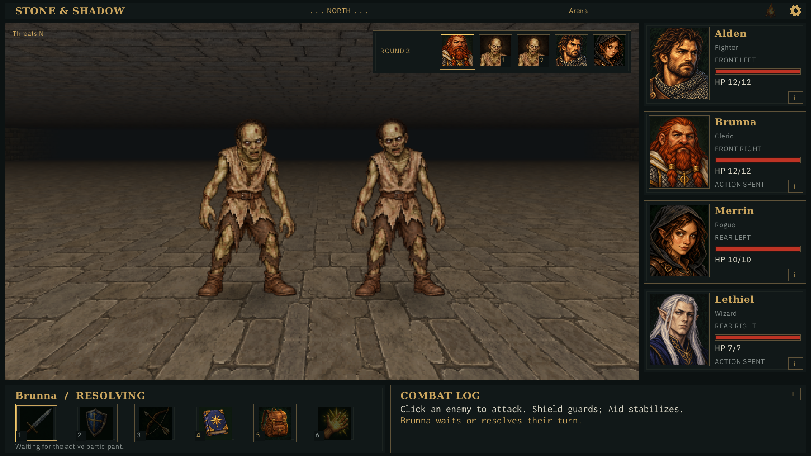
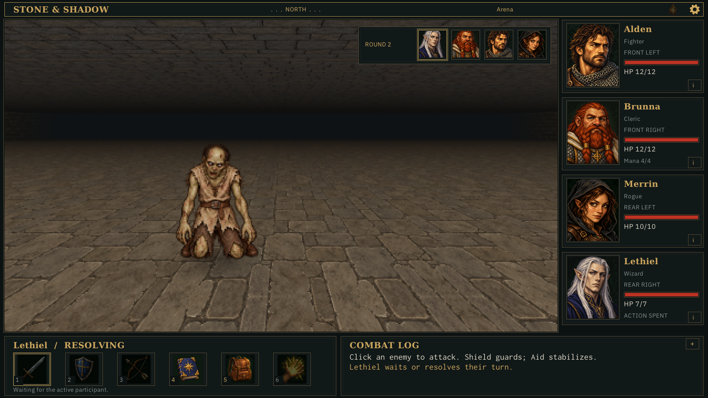
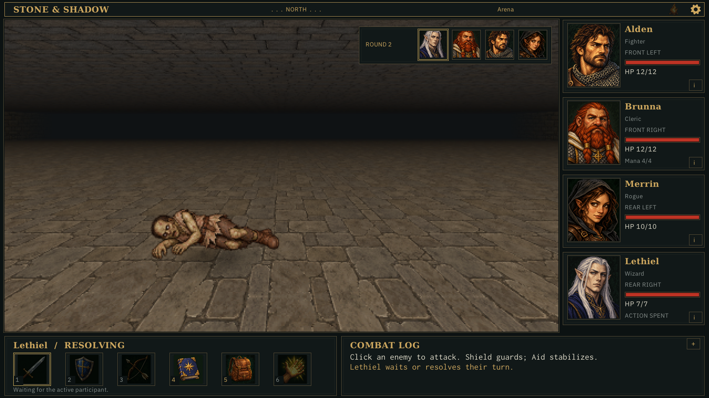
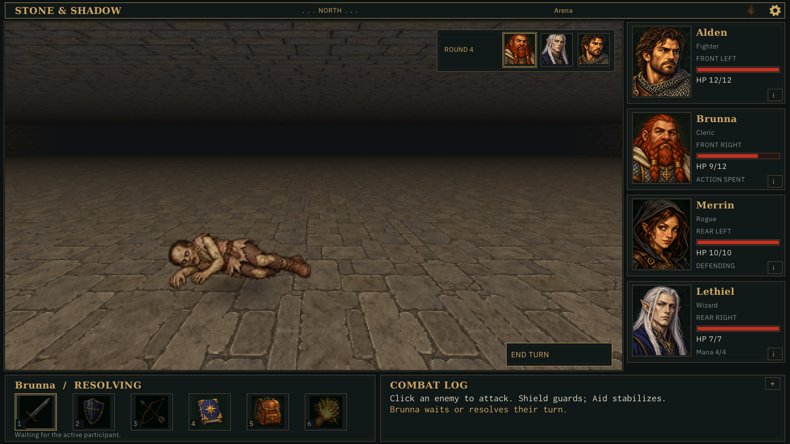
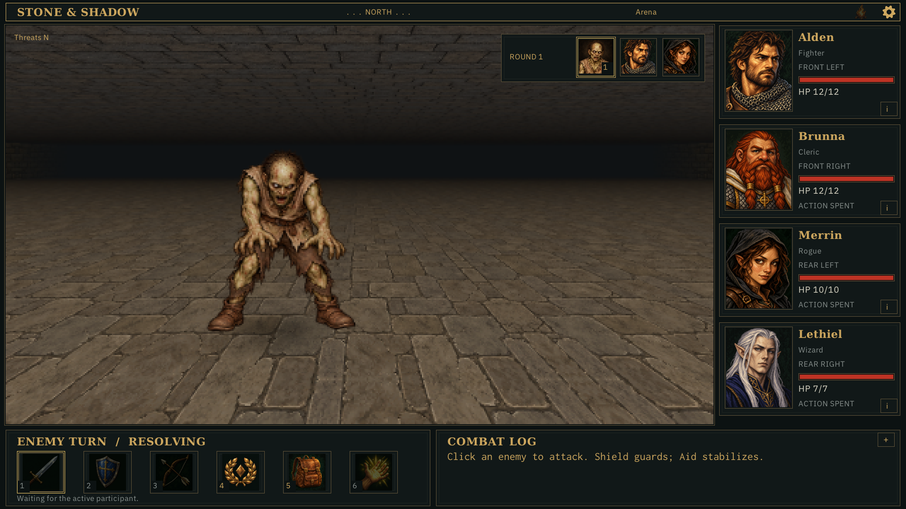
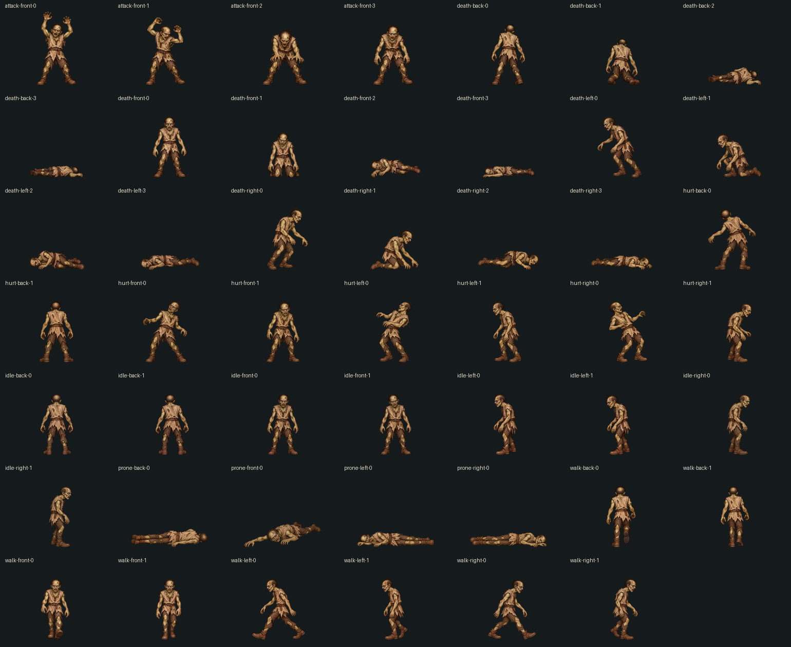

Accepted and closed (2026-11-01). Reference v1 and completed slice accepted. Verification and limitations · Art provenance and prompts
All retained scenarios use the ordinary level-one party and seed 8. Captures are hidden application-owned 1920×1080 images from strict visual-mode replay. No OS input, focus changes or desktop automation. Historical hover, logs and floating feedback are not reconstructed; the CPU suite checks survival feedback.
| Recipe | Observed result | Evidence |
|---|---|---|
| zombie-one | Victory, round 2. Fortitude: failed. Alden 12/12, Brunna 12/12, Merrin 10/10, Lethiel 7/7. | Scenario · Events/checkpoints · Strict trace |
| zombie-radiant | Victory, round 4. Fortitude: radiant_bypass. Alden 12/12, Brunna 9/12, Merrin 10/10, Lethiel 7/7. Uses regular Defend to leave low-HP finishing attacks to the cleric; not a battle-length comparison. | Scenario · Events/checkpoints · Strict trace |
| zombie-two | Victory, round 3. Fortitude: saved, failed, saved, failed. Alden 12/12, Brunna 10/12, Merrin 10/10, Lethiel 7/7. | Scenario · Events/checkpoints · Strict trace |
| zombie-goblin | Victory, round 3. Fortitude: saved, failed. Alden 5/12, Brunna 0/12, Merrin 10/10, Lethiel 0/7. Dangerous encounter: two companions down. | Scenario · Events/checkpoints · Strict trace |
These are behavior/readability recipes, not calibrated difficulty or evidence of fun. Rematches reset time, HP and mana. Campaign/PC07 remain paused.






